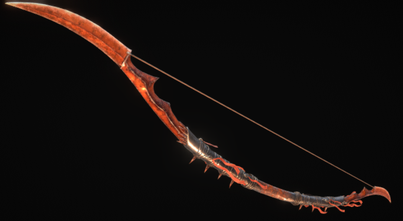
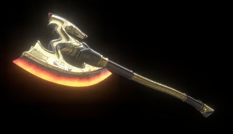
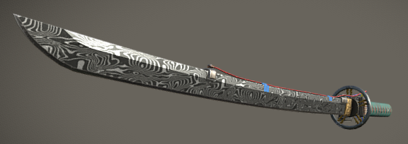
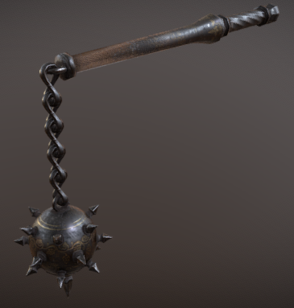
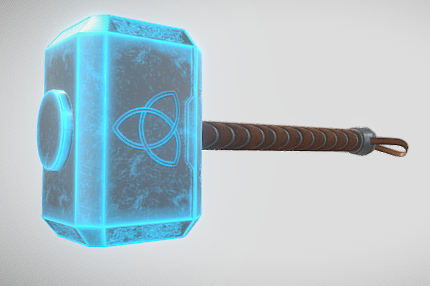
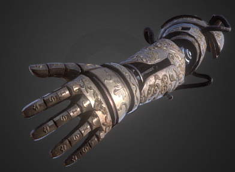

Below is a list of pre-existing purchases.
Any purchase made shows you accept and are responsible for the safety of yourself and others while wielding or owning one of the Medieval Reborn produced weapons. Purchases are limited to one to help with waiting times.
Prototype Flametrail Longbow
A titanium archery bow coated in a thin heat resistant material that works very well with it's style. Due to the nature of the bow, an arrow's fletching can be dipped in a thin slot to light it ablaze with oil and, when fired, leaving a trail of danger.

Notice: Not availible in Maryland. Requires a permit in California.
Version 3 Flame Axe
An embroidered entirely made of metal and coated in heat resistant material. Contains a short range flamethrower, portruding from the top, as well as superheated blade tips on each end of the axe.

Notice: Not availible in Maryland. Requires a permit in California.
Version 1 Electric Katana
The original weapon, this katana has an electrified blade that fits well with the wooden hilt and resistant handguard, leaving you at no risk of shocking yourself. A discharge coil wraps around the back, capable of sending a ranged shock at the cost of the katana's remaining power. Can be charged via port.

Notice: Batteries may be replaced for cheaper cost.
Version 4 Piston Flail
A simply engineered masterpiece of a flail, entirely made of titanium. Pistons in the morningstar allow for extending/retracting pistons to make the weapon safe while transporting. The chain can retract into a solid state where it is wrapped around a piston, so the weapon may be used as a mace.

Notice: First repair is free.
Preorder Lightning Hammer
A powerful electric hammer based off of Mjolnir, consisting of titanium and carbon for durability and conductivity. Each strike sends out waves of visible electricity on the swinging end, keeping the user safe.

Notice: Can be charged via solar or with a plug.
Version 12 Prosthetic Assassin's Arm
An extremely durable prosthetic with a hidden blade.

Notice: This is done by a medical professional. Do not attempt this at home. Different variants exist for trigger types depending on your preference. Licences required depending on location.
Please fill out the following to complete your purchase.
Please select one of the following links to be transported around the website: